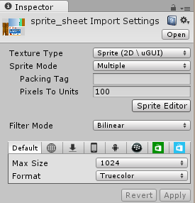
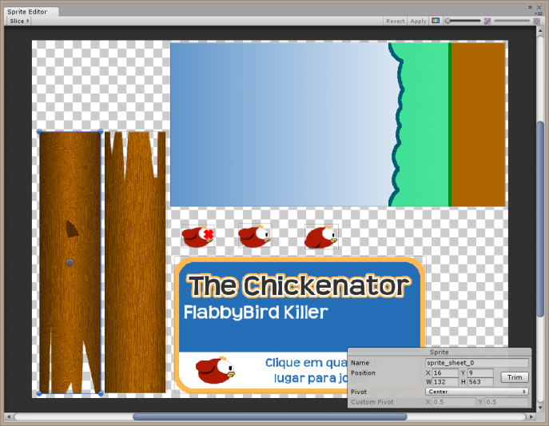
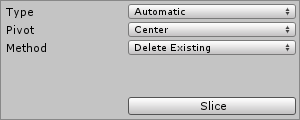
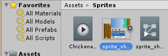
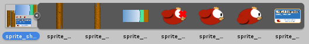

Sprite Editor do Unity 3D
O Unity tem uma ferramenta para a criação de jogos 2D, que é o Sprite Editor. Ele é usado em imagens que contém múltiplos sprites.
-Importe a imagem com múltiplos sprites
-Altere no Inspector seu tipo para Sprite
-Altere SpriteMode para Multiple
-Clique em Sprite Editor
-Clique em Slice
-Se satisfeito clique acima em Apply, caso contrário faça os ajustes, mude os names, etc e ao final clique em Apply.
-Em Assets clique na setinha à direita do sprite para ver seus subs.
Exemplo:

Precisamos configurar a imagem como
Sprite
Multiple
Então clicar no botão Sprite Editor

Para separar as imagens para o Unity:
-Clicar acima no botão Slice
Aparecerá então a janelinha:

Geralmente basta clicar em Slice abaixo.
E ficará assim:
Abaixo e à direita aparecem as propriedades do sprite selecionado, onde podemos ajustas a posição, nome e dimensões.
Quando satisfeito clicar acima em Apply e feche a janela.
Veja que a imagem agora tem uma pequena seta à direita:

Ao clicar na seta aparecem os sprites:

Para que apareçam os nomes completos dos sprites arraste o botão abaixo e à direita.
Agora podemos usar cada um dos sprites em separado, arrastando para a cena.